2 ВАРИАНТ
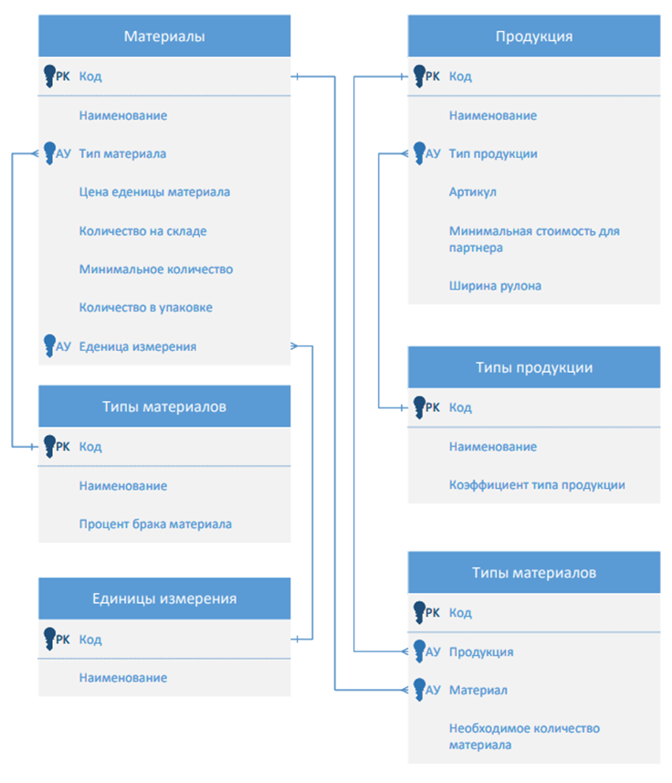
ER-Диаграмма (сохранить в .PDF)
1) Создаем справочники:
- Типы материалов,
- Типы продукции,
- Единицы измерения,
- Материалы,
- Продукция (добавить «Стоимость»– Только просмотр, подсказка «Рассчитывается автоматически»).
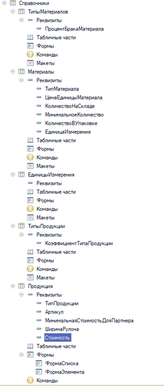
2) Создаем документ «Производство продукции» все реквизиты обязательны.
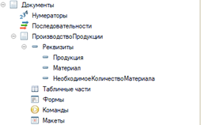
3) Создаем общий модуль (устанавливаем «Вызов сервера») например назовём «МетодыРасчетаСтоимостиПродукции» и создадим функцию «ПолучитьСтоимостьПродукции» которая принимает значения (Материал,НеобходимоеКоличество) делаем ее «Экспорт»
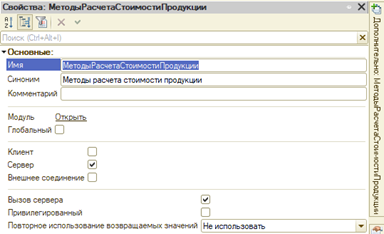
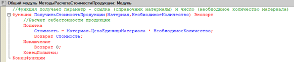
4) Переходим в модуль объекта документа «Производство» и вызываем метод «ОбработкаПроведения», то есть после проведения документа нам нужно обновить данные в справочнике продукция – получаем текущее значение реквизита стоимость и потом обновляем его складывая со значением в документе
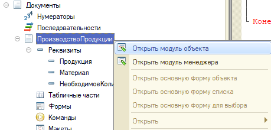
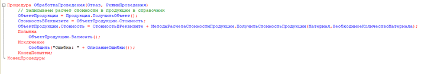
Код в модуле объекта документа «Производство»
5) Создадим основной шрифт и стиль
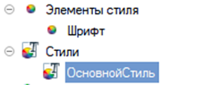

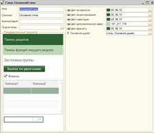
6) Добавим общую картинку и создадим форму с картинкой
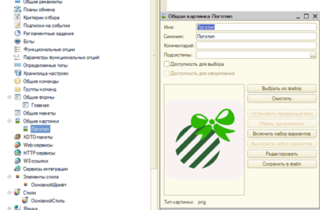
Общая картинка – Логотип
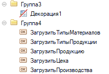
Элементы формы: Картинка + Кнопки загрузки
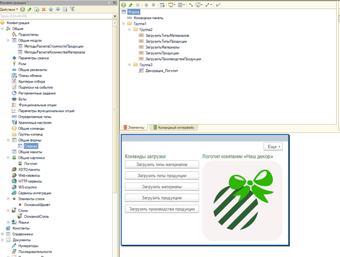
Общая форма - Главная
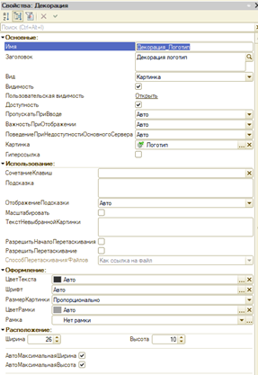
Свойства Декорации (Картинка)
7) Настроим конфигурацию
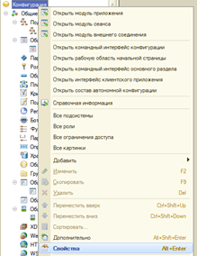
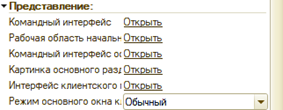
Устанавливаем: «Рабочая область начальной страницы»
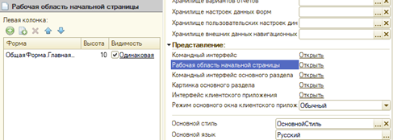
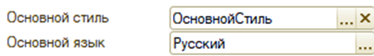
Указываем созданный – «ОсновнойСтиль»
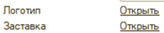
Указываем логотип и заставку (.png)
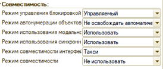
Устанавливаем режимы использования синхронных и модальных методов – «Использовать» ЭТО ДЛЯ ЗАГРУЗКИ
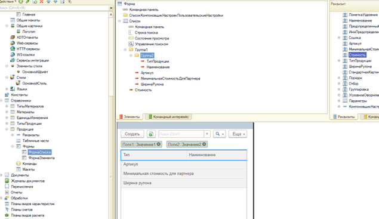
НАСТРОЙКА СПИСКА ПРОДУКЦИИ
ОБЯЗАТЕЛЬНО НА 5 (РЕШЕНИЕ 4 МОДУЛЬ)
Создадим еще один общий модуль и назовём «МетодыРасчетаКоличестваМатериала», установить «ВызовСервера», в нем создадим функцию «ПолучитьКоличествоМатерила» с параметрами (ТипПродукции,ТипМатериала, КоличествоПолучаемойПродукции)
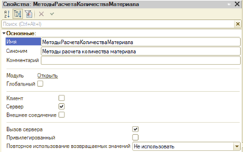
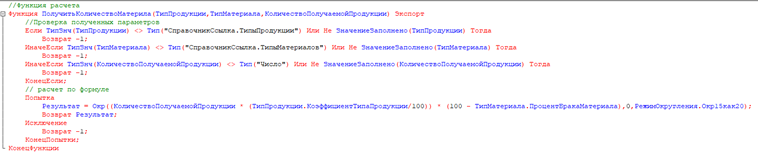
Код функции (Проверку можно не писать но она дает балы!)
Формула: Результат = Количество*Коэффициент/100 * (100-Процент)
Далее создадим внутреннюю обработку «РасчетКоличестваСырья»

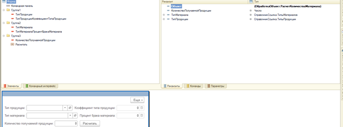
Вызываем нашу функцию из модуля и передаем в нее параметры с формы

Код кнопки – на клиенте
ПОНИМАЕМ, ЧТО ЕСТЬ ВРЕМЯ НА ЗАГРУКУ ТОГДА:
На «Главной» форме, где картинка создаем кнопки загрузки и пишем код загрузки
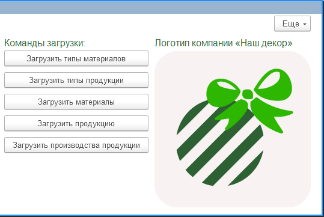
Пример кода для одной из кнопок, другие делать по примеру первой кнопки
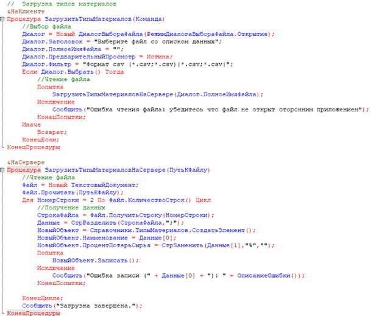
Код загрузки типов материалов
ПОСЛЕДНИЕ ДЕЙСТВИЯ
Необходимо сделать «Замочки» - ПАРОЛЬ НЕ СТАВИТЬ!
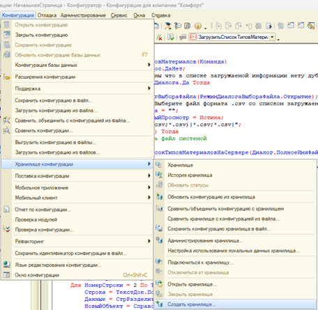
Сохраняем «Замочки» в созданную папку «ХранилищеДанныхКонфигурации» (лучше создать ее в папке «Результат», пароли не ставим, подключаемся
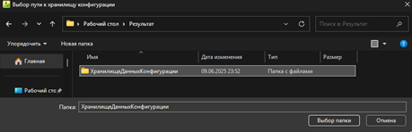
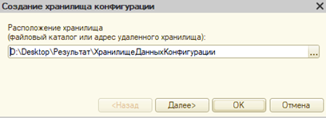
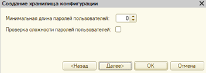
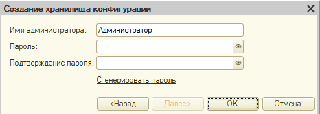
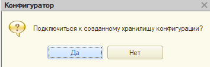
Выгружаем базу
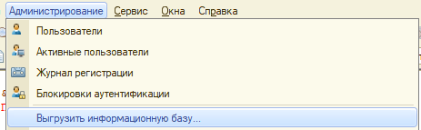
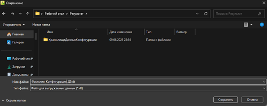
Выгружаем базу в «Фамилия_Конфигурация_ДЭ.dt»
Если делали загрузку – создать папку «ФайлыДляЗагрузкци»
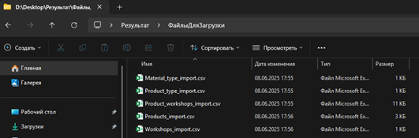
ИТОГО ДОЛЖНО ПОЛУЧИТЬСЯ
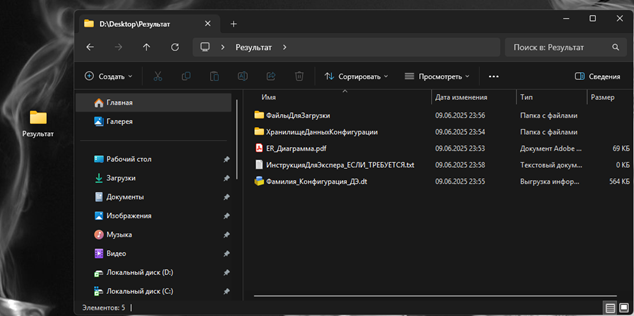